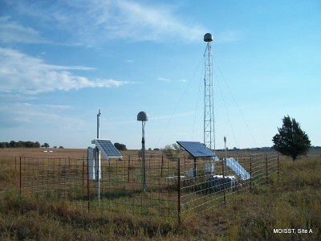

Soil Physics Toolbox Home Page

Contact Information: mailto:tyson.ochsner@okstate.edu
Visit soilphysics.okstate.edu
Contents
Toolbox description
This toolbox is a collection of Matlab functions that have been developed for research and teaching purposes. The reason for compiling this toolbox is not only to share our knowledge and methods with other scientists and students, but we also envision this toolbox to generate reproducible research.
Soil water balance functions
Soil energy balance functions
Soil pedo-transfer functions
Contributors
Dr. Tyson E. Ochsner tyson.ochsner@okstate.edu
Dr. Erik S. Krueger erik.krueger@okstate.edu
Andres Patrignani andres.patrignani@okstate.edu
Toolbox developed by the soil physics team at Oklahoma State University